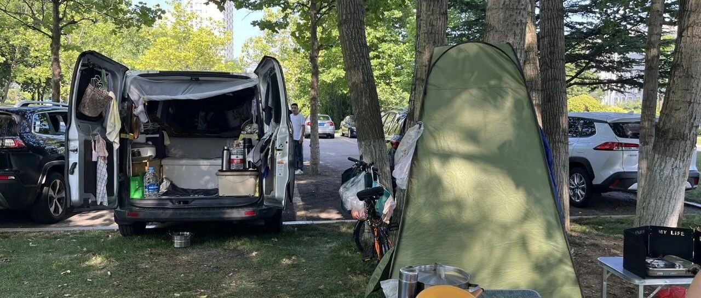

开着2万多的车，全国旅居4年
点击关注 秋秋在分享
一起实现财务自由退休
大家好，我是秋秋呀。
又是新的一周，聊点不一样的，打开新思路～
没错，一辆两万多的小货车，全国旅行4年了！
主人公居然是60多岁的老头老太太。

就停在我们旅居的小区楼下。
他们从广州出发，一路北上，夏天在东北新疆或者山东沿海避暑，冬天就返回广州或去三亚。
一辆车，两个人，他们的生活让我觉得人生原来如此简单。
我和大老王的旅居生活，筹备了很久设想要准备充足资金。
现在看，开始的勇气是最难得的。
我问他们，你们怎么想起来过床车生活的？
他们说年轻的时候就喜欢户外，城市的房子虽然好，总觉得闷的慌，不如接触大自然舒服。
直到60多岁才有这样的机会。
之前要养孩子，照顾90多岁的老母亲。
父亲早就去世了，一般女性寿命比男性长一点，送走老母亲，又要给儿女带孩子，无牵无挂的日子真的很少。
想想也是，20多岁忙着读书找工作，30多岁忙着赚钱养家，40多岁上有老下有小，50多岁终于有时间了又可能帮着子女带娃……
他们也是意识到这一点，等老人去世，孩子上小学，60多岁出发了。
这辆车最不值钱，是女儿做生意退下的，二手也就两三万。
他们把后面做成了床，随车配备了五度电的移动电源，还带了一个小自行车，方便出行。
我看了他们的装备，真的很简单。

一张床，锅碗瓢盆，几件衣服，折叠桌椅板凳足以。
洗衣服，就在公共卫生间手洗，树上扯条绳晾晒，夏天衣服单薄也不麻烦。
洗澡是弄了一个简易帐篷，用大矿泉水瓶晒水洗。

我知道，写到这肯定有人会觉得这是什么苦日子！还要自己手洗衣服晒水洗澡。
他们却挺怡然自得的，因为一切都出于喜欢，没有任何压迫，做事情也没有紧张感。
就像我提前退休了还在写东西，有人会说你根本不是真正的退休。
提前退休好像就不能再出现在网络上，只能吃喝玩乐躺平了。
我觉得，退休这事儿吧，就跟点菜似的——有人爱清汤寡水，有人就好重口味。
你可以享受躺着刷剧的退休，也可以享受写写画画的退休。
提前退休怎么过，每个人都可以定义。
我有时候会躺平，出去旅行好久，吃各种美食。
有时候也会忙忙碌碌，每天写东西看书。
看到大家的留言我会开心。

写作这件事也能让我的头脑清晰。
输出的快乐，有时候大于美食和旅行。

我理解的退休生活，也是因人而异的。
只要是为了想像中的明天牺牲今天，随时有说不的底气就行。
本质是：既然过上了不用为钱发愁的日子，就怎么舒服怎么来！
这对老人也是，他们觉得比起60多岁就病怏怏的同龄人，能动手做事反而很幸福！
一点不觉得累。
我之前看过梭罗的《瓦尔登湖》，也是强调这种简单生活。
在生活上做减法，就是在自由上做加法。
这辆2万多的车，装的不仅是锅碗瓢盆，也是对生命本质的回归。
消费主义的时代，有多少人能一辆车就出发？
总觉得过喜欢的生活，需要太多太多。
他们现在是幸福的，不为钱烦恼，能做喜欢的事，过上时间完全属于自己的日子。
年轻时的我们要为金钱和责任奔忙，年老时才有机会为自己活一次，很多人身体却抱恙。
所以活得简单些，很难。
好在，现在的我们不必等到六十岁就能提前退休了～
能为自己争取了更多个人时间🤗